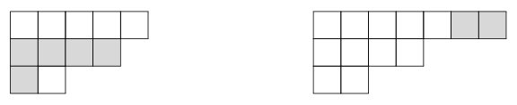

← Index · ← Previous · Next →
Authors: Tianyin Li, Ying-Ying Li, Xiaoyang Wang, Hongxi Xing
Type: theory · Category: quantum information and computing · PDF: https://arxiv.org/pdf/2608.27267v1
Analysis basis: full PDF text, analyzed in chunks
Topic relevance: analog quantum simulation 1/5
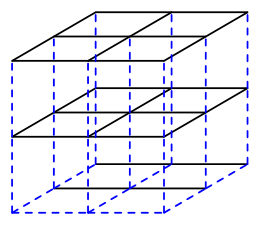
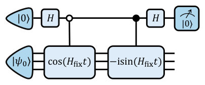
Summary. This paper presents a quantum algorithmic framework to simulate Yang-Mills theories, specifically QCD, by employing the maximal-tree gauge to simplify the Hamiltonian. The time evolution is efficiently implemented using the Quantum Singular Value Transformation (QSVT). The key achievement is deriving polynomial complexity bounds, proving that such non-Abelian theories are efficiently simulable on quantum computers.
Why it may be interesting. The work provides a concrete, resource-efficient quantum algorithm for simulating a cornerstone problem in high-energy physics (QCD), which is highly relevant for quantum simulation research.
Main problem. Developing an efficient quantum algorithmic framework to simulate the dynamics of Yang-Mills theories, such as SU(3) QCD.
Main result. The authors provide rigorous complexity bounds demonstrating that non-Abelian Yang-Mills theories can be simulated efficiently on quantum computers with polynomial scaling in key parameters.
Method. The simulation uses the maximal-tree gauge to fix gauge redundancies, digitizes the resulting Hamiltonian in the field-amplitude basis, and implements the time evolution via the Quantum Singular Value Transformation (QSVT).
Model / system. The system is Quantum Chromodynamics (QCD), modeled by an SU(3) non-Abelian Yang-Mills theory. The dynamics are governed by a gauge-fixed Hamiltonian $H_{ ext{fix}} = H_{\Pi} + H_B + H_V$.
Key observables. Qubit count ($N_G$) and gate complexity ($\mu$) for the time evolution operator $U_{ ext{fix}}(t)$.
Important parameters / regimes. Inverse simulation precision ($1/\epsilon_s$), lattice volume ($\mathcal{V}$ or $V$), gauge coupling ($g$), and target energy scale ($E$).
Assumptions / limitations. The derivation assumes the global Gauss-law constraint subspace allows the necessary matrix $K$ to be positive definite and invertible; the Hamiltonian includes an $O(a_s)$ discretization error.
Figures summary. Figure 1 illustrates the maximal tree structure on a cubic lattice, and Figure 2 shows the quantum circuit realizing the time evolution operator $U_{ ext{fix}}(t)$ using QSVT.
Paper structure. The paper first establishes the gauge-fixed Hamiltonian using the maximal-tree gauge, derives the necessary constraints (like Gauss's law), and then details the quantum implementation using QSVT. Finally, it derives the polynomial scaling bounds for the required qubits and gate complexity.
We develop a quantum algorithmic framework for the efficient simulation of Yang--Mills theories, including the $\mathrm{SU}(3)$ gauge theory in Quantum Chromodynamics (QCD). The framework uses maximal-tree gauge in terms of gauge field variables that removes all local gauge redundancies. In the resulting gauge-fixed formulation and digitization in the field-amplitude basis, we show that Hamiltonian time evolution admits an efficient implementation based on quantum singular value transformation (QSVT). We derive upper bounds on the total number of qubits and gate complexity, finding polynomial scaling with the inverse simulation precision $1/\varepsilon_s$, lattice volume $\mathcal{V}$, gauge coupling $g$, and target energy scale $E$. Our results provide a rigorous complexity-theoretic demonstration that non-Abelian Yang--Mills theories can be simulated efficiently on quantum computers, paving the way toward first-principles quantum simulations of non-perturbative QCD dynamics.
Authors: Emmanuel Billias, Nikos Chrisochoides
Type: both · Category: other · PDF: https://arxiv.org/pdf/2608.27333v1
Analysis basis: full PDF text, analyzed in chunks
Topic relevance: quantum measurements 1/5
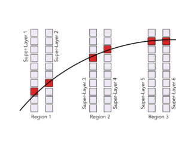
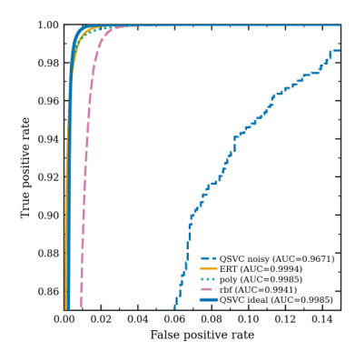
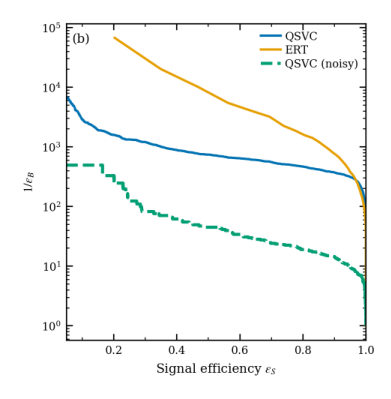
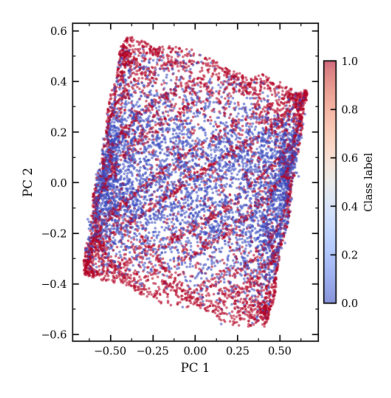
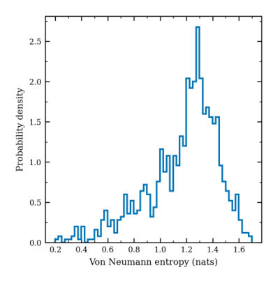
Summary. This work presents a scalable framework for applying Quantum Support Vector Classifiers to particle-track identification in HEP. By encoding detector features into a quantum state, the authors demonstrate that the quantum kernel maintains a critical advantage in signal retention over classical methods, even when accounting for realistic hardware decoherence.
Why it may be interesting. While the application is HEP, the core methodology—quantifying the performance gap between ideal quantum computation and noisy, scalable quantum kernel estimation—is highly relevant to open quantum systems research.
Main problem. The paper evaluates the utility of quantum kernel methods for distinguishing particle tracks from background noise in high-energy physics (HEP) data.
Main result. The Quantum Support Vector Classifier (QSVC) achieved the highest recall (99.99%) in ideal simulations, demonstrating a signal-retention advantage over classical methods, which persists even under realistic hardware noise.
Method. A quantum kernel is constructed using a fully entangled ZZFeatureMap, which is then integrated into a standard Support Vector Machine (SVM) framework for classification.
Model / system. The system is particle-track classification using centroid-based features from the CLAS12 drift-chamber detector. The methodology involves simulating the quantum kernel computation on large datasets using multi-node HPC resources.
Key observables. Recall (99.99% ideal, 99.51% noisy), AUC (0.9985 ideal, 0.9671 noisy), and peak significance improvement.
Important parameters / regimes. Scales up to $4.0 imes 10^5$ test events; performance is quantified under a calibrated hardware noise model (FakeMumbaiV2).
Assumptions / limitations. The primary assumption is that the quantum kernel's ability to capture non-linear correlations provides a distinct advantage in signal-retention, even when hardware noise degrades performance.
Figures summary. The notes suggest geometric analysis showing near-orthogonal inter-class states under ideal conditions, and performance curves comparing ideal vs. noisy metrics.
Paper structure. The paper systematically designs the QSVC workflow, benchmarks it against classical kernels (linear, RBF, etc.), and then rigorously tests its performance under both ideal simulation and realistic hardware noise models.
We present a systematic design for large-scale quantum kernel classification, demonstrated through a quantum support vector classifier (QSVC) for particle-track classification using centroid-based CLAS12 drift-chamber features. Each event is encoded into a six-qubit state via a fully entangled ZZFeatureMap, whose fidelities define a quantum kernel within a standard SVM framework. By decoupling state preparation from kernel construction and distributing evaluation across a multi-node MPI-based HPC allocation, the approach scales to 1.0x10^5 training and 4.0x10^5 test events with an exactly constructed kernel matrix, to our knowledge more than an order of magnitude larger than prior high-energy-physics quantum-kernel studies. Benchmarked against linear, polynomial, RBF, and sigmoid SVM kernels and extremely randomized trees (ERT), the ideal QSVC achieves the highest recall (99.99%) among all models. Under a calibrated hardware noise model (FakeMumbaiV2, 500 training / 2,000 test events), AUC falls from 0.9985 to 0.9671 and peak significance improvement falls from 17.5 to ~3.5, yet recall remains at 99.51% -- indicating this signal-retention advantage is attenuated but not eliminated by circuit-level decoherence. Geometric analysis of the quantum embedding shows near-orthogonal inter-class states with coherent intra-class neighborhoods under ideal simulation; under noise this structure compresses toward the maximally mixed state while preserving its relative ordering. These results demonstrate a scalable, reproducible workflow for quantum kernel experimentation at HEP-relevant scale, quantifying the practical cost of realistic hardware noise on quantum-enhanced classification.
Authors: Shunji Matsuura, Yoji Kawamura, Joseph Salfi, Satoshi Iso
Type: theory · Category: disordered systems and neural networks · PDF: https://arxiv.org/pdf/2608.27399v1
Analysis basis: full PDF text, analyzed in chunks
Topic relevance: analog quantum simulation 1/5
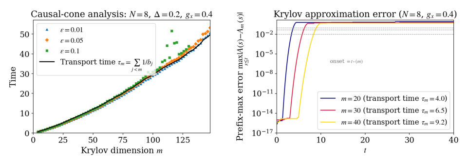
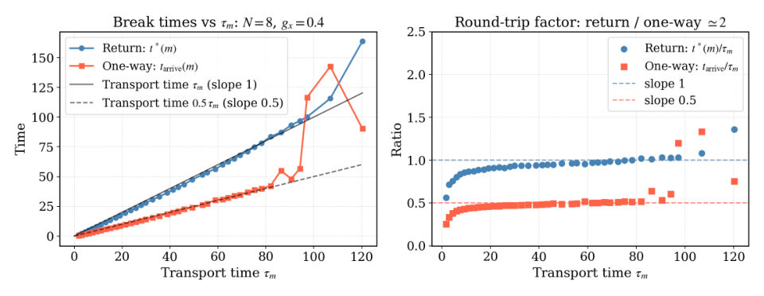
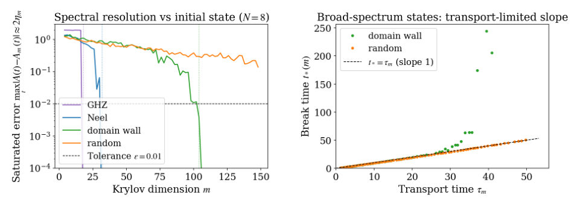
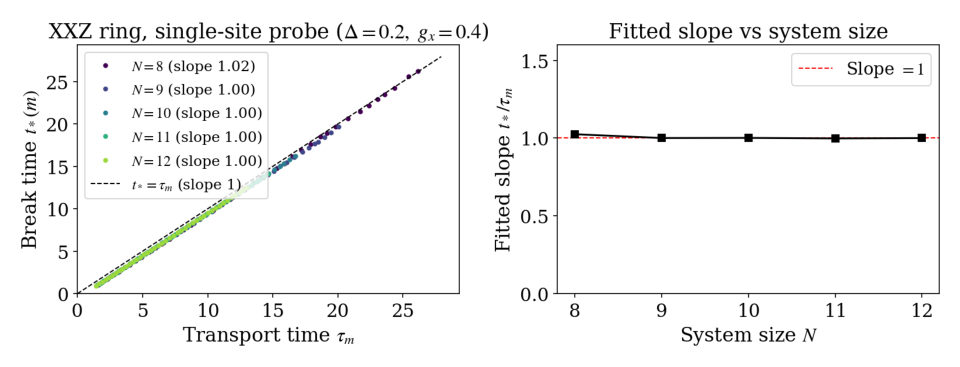
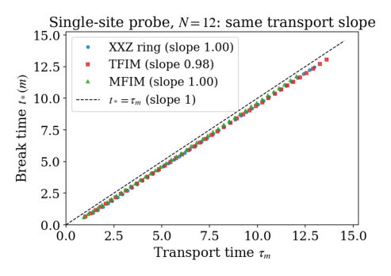
Summary. This theoretical work establishes a precise lower bound for the 'break time' of Krylov subspace approximations used to simulate quantum dynamics. The break time is found to be dictated by the inhomogeneous transport time scale ($ au_m$) derived from the system's underlying Jacobi chain structure. This result connects computational limitations directly to fundamental concepts like Lieb-Robinson bounds and causal propagation in quantum many-body systems.
Why it may be interesting. It provides a rigorous, physically motivated timescale ($ au_m$) for the breakdown of computationally intensive quantum simulation techniques (Krylov methods) when applied to spatially extended quantum systems.
Main problem. The paper addresses the fundamental question of determining the reliable time window (break time) for using a finite-dimensional Krylov subspace approximation of quantum dynamics.
Main result. The break time $t^*(m; \epsilon)$ is shown to be lower-bounded by a characteristic transport time $ au_m = \sum 1/b_j$, suggesting that the approximation error is governed by the round-trip time scale.
Method. The analysis combines the derivation of a Lieb-Robinson bound in an inhomogeneous transport metric with Duhamel's formula to establish a rigorous lower bound on the approximation error.
Model / system. The system is modeled by a quantum Hamiltonian restricted to a Jacobi chain representation, which arises from the Lanczos recursion applied to an initial state $|v_0\rangle$. The dynamics are analyzed via the principal truncation $J_m$ of this matrix.
Key observables. Break time $t^*(m; \epsilon)$, Transport time $ au_m$, Lieb-Robinson velocity $v_{LR}$.
Important parameters / regimes. The error tolerance $\epsilon$, the dimension of the truncation $m$, and the local hopping parameters $b_j$.
Assumptions / limitations. The analysis relies on the structure of the Jacobi chain and assumes specific spectral properties (e.g., purely absolutely continuous spectrum) to establish the saturation of the lower bound.
Paper structure. The paper proceeds by defining the inhomogeneous transport metric, proving a Lieb-Robinson bound within this metric, deriving the lower bound on the break time using Duhamel's formula, and finally discussing the saturation of this bound under various spectral assumptions.
Krylov and Lanczos approximations are used in quantum dynamics, quantum subspace methods, and Hamiltonian learning. A practical question is how long an $m$-dimensional Krylov truncation can be trusted. We argue that this time is fixed by causal propagation on the associated Jacobi chain. The relevant distance is not the Krylov index itself, but the inhomogeneous transport metric $ρ(m,n) = \sum_{j=\min(m,n)}^{\max(m,n)-1} 1/b_j$, where $b_j$ is the Lanczos hopping across the bond $j \leftrightarrow j+1$. We prove a Lieb--Robinson bound in this metric. Its small-weight limit gives the velocity $v_{\rm LR} = 2$, meaning that propagation is exponentially suppressed outside the cone $ρ(m,n) \simeq 2|t|$. The error of a finite Krylov approximation to the return amplitude is a round-trip effect: information has to travel from the probe to the truncation boundary and back. Combining the Lieb--Robinson bound with Duhamel's formula yields a lower bound on the error of the truncated dynamics. For a fixed tolerance $ε$, let the break time $t_\ast(m;ε)$ denote the longest time for which the $m$-dimensional truncation is guaranteed to reproduce the exact return amplitude within error $ε$. We show that $t_\ast(m;ε) \ge τ_m[1-o(1)]$, where $τ_m = ρ(0,m) = \sum_{j
Authors: Marco Fanizza, Dmitry Grinko, Thilo Scharnhorst, Jack Spilecki
Type: theory · Category: quantum information and computing · PDF: https://arxiv.org/pdf/2608.27298v1
Analysis basis: full PDF text, analyzed in chunks
Topic relevance: quantum measurements 1/5

Summary. This paper rigorously solves the sample complexity problem for approximately cloning unknown mixed quantum states. By establishing matching upper and lower bounds using the PCT cloner and projector states, it determines that the required number of input copies scales as $\Theta(krd/\epsilon)$. This result sets a fundamental limit on quantum information processing tasks.
Why it may be interesting. This work provides fundamental, quantitative bounds on the information-theoretic limits of quantum state manipulation, which is crucial for designing quantum communication protocols and understanding the robustness of quantum information.
Main problem. The paper determines the minimum number of input copies ($n$) required to approximate the cloning of $k$ additional copies of an unknown mixed quantum state $ ho$ to a specified fidelity ($1-\epsilon$).
Main result. The sample complexity for both mixed state cloning and approximate transposition is found to be $\Theta(krd/\epsilon)$, where $r$ is the rank of the state, $d$ is the dimension, and $\epsilon$ is the error tolerance.
Method. The authors establish the upper bound using a 'Purify-Clone-Trace' (PCT) cloner, which reduces the mixed state problem to the pure state case. The matching lower bound is proven by analyzing the special, hard-to-clone case of projector states.
Model / system. The study concerns the theoretical limits of quantum state cloning and transposition for mixed states $ ho$ in a $d$-dimensional Hilbert space. The analysis uses tools from representation theory, including Schur polynomials, to derive rigorous bounds.
Key observables. Fidelity ($F$), Sample Complexity ($n$), State Rank ($r$), and Dimension ($d$).
Important parameters / regimes. The required fidelity $1-\epsilon$, the number of copies to clone $k$, and the state rank $r$.
Assumptions / limitations. The lower bound proof relies on considering projector states ($ ho = P/r$) as the worst-case scenario for cloning.
Figures summary. Figure 1 illustrates the PCT cloner process: purifying the input state, applying the Werner cloner in the larger space, and tracing out auxiliary registers.
Paper structure. The paper first reviews the known optimal result for pure states. It then constructs the PCT cloner to establish an upper bound for mixed states. Finally, it proves the matching lower bound using projector states, thereby resolving the sample complexity.
We consider the problem of approximate cloning of quantum states: given $n$ copies of an unknown state $ρ\in \mathbb{C}^{d \times d}$, prepare an $(n+k)$-copy state with high fidelity to $ρ^{\otimes (n+k)}$. Werner's pure state cloner is the optimal channel for the pure state case, and shows that $n = Θ(kd/\varepsilon)$ copies are necessary and sufficient to clone $k$ additional copies of an unknown pure state to fidelity $1-\varepsilon$. The random purification channel gives a straightforward extension of Werner's cloner to mixed state inputs: given $n$ copies of a mixed state, randomly purify your input, apply Werner's channel in the larger Hilbert space, and then trace out the auxiliary registers. This gives a mixed state cloner using $n = O(krd/\varepsilon)$ copies to clone rank-$r$ states. Can one do any better? We show that the answer is no: one must use $n = Ω(krd/\varepsilon)$ copies. We prove our lower bound by studying the special case of projector cloning, in which the input state $ρ$ is promised to be of the form $P/r$, where $P$ is a rank-$r$ orthogonal projector. As a further application of our techniques, we consider the closely related problem of approximate transposition of quantum states, where one seeks to convert $ρ^{\otimes n}$ to a $k$-copy state with high fidelity to $(ρ^T)^{\otimes k}$. Here, we again show $n = Θ(krd/\varepsilon)$ copies are necessary and sufficient for this task.
Authors: Shashank Kumar Ranu, Lewis Wooltorton, Alastair A. Abbott, Omar Fawzi
Type: theory · Category: quantum information and computing · PDF: https://arxiv.org/pdf/2608.27357v1
Analysis basis: full PDF text, analyzed in chunks
Topic relevance: quantum measurements 1/5
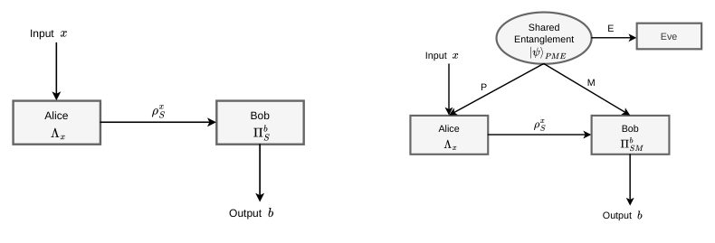
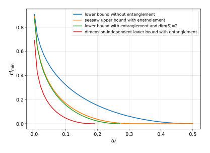

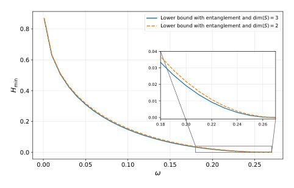
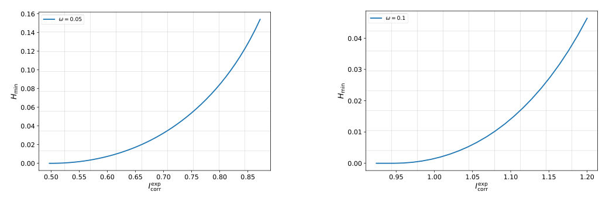
Summary. This paper establishes the theoretical possibility of generating certified randomness in energy-constrained semi-device-independent quantum cryptography. By adapting the NPA hierarchy to incorporate energy bounds, the authors derive SDP relaxations that provide lower bounds on the min-entropy even when the adversary has full quantum access. This resolves a long-standing open question in the field.
Why it may be interesting. This work provides rigorous, device-independent security guarantees for quantum random number generation under realistic physical constraints (energy), which is highly relevant for quantum optics and quantum information hardware.
Main problem. To determine if certified randomness can be generated in energy-constrained semi-device-independent (SDI) quantum cryptography scenarios, especially when the adversary can share quantum entanglement.
Main result. The authors affirmatively answer the open question, proving that certified randomness generation is theoretically possible even against a fully quantum adversary, yielding positive lower bounds on the min-entropy.
Method. They adapt the Navascués-Pironio-Acín (NPA) hierarchy to construct semidefinite programming (SDP) relaxations of the guessing probability, allowing for dimension-independent security proofs.
Model / system. The model is a prepare-and-measure (PM) framework for quantum random number generation, constrained by a finite energy bound ($\omega$) on the prepared states.
Key observables. The primary observables are the extractable min-entropy ($H_{\min}$) and the correlator difference ($I_{ ext{corr}}$), which quantify the security and randomness rate.
Important parameters / regimes. The energy parameter ($\omega$) is crucial, as the certified rate remains positive for a range of small energy values.
Assumptions / limitations. The core assumption is the energy constraint on the prepared states. The analysis is strongest when assuming the adversary can share full quantum entanglement.
Figures summary. Figures illustrate the energy-constrained PM scenario, showing the certified $H_{\min}$ vs. $\omega$ for different dimension assumptions, and demonstrating the robustness of $H_{\min}$ when the observed correlator is reduced.
Paper structure. The paper develops the SDP relaxation by adapting the NPA hierarchy to the energy-constrained setting, deriving structural constraints on the POVM elements, and finally solving the optimization problem to yield the certified lower bound on randomness.
The prepare-and-measure framework based on energy constraints offers a practical middle ground between fully device-dependent and device-independent quantum cryptography. The only assumption on an otherwise uncharacterized prepare-and-measure device is that the energy of the prepared states is bounded. Existing security analyses of this framework assume that the preparation and measurement devices share at most classical correlations, and under this assumption certified lower bounds on the extractable randomness have been established. Recent work has shown that an adversary who pre-distributes entanglement between the devices can mount attacks that are strictly more powerful than those available when the devices share only classical correlations, reducing the extractable randomness below the previously certified rates. This leaves open the fundamental question of whether randomness can be certified at all in this scenario. We address this open question by constructing semidefinite programming relaxations of the guessing probability by adapting the Navascués-Pironio-Acín hierarchy to the energy-constrained setting where shared entanglement between the devices is permitted. Our relaxations yield certified lower bounds on the extractable randomness without enforcing any restrictions on the dimensions of the quantum state shared between the preparation and measurement devices. We show that these certified lower bounds are strictly positive for a range of energy values, thereby answering the open question affirmatively: certified randomness generation is theoretically possible in the energy-constrained SDI framework even in the presence of a fully quantum adversary.
Papers from primary archives without highlighted authors or any topic match. Click to expand.
Authors: A. N. Azarevich, A. V. Bogach, T. F. Garipova, V. V. Voronov, M. Rajnak, S. Gabani, K. Flachbart, N. B. Bolotina, O. N. Khrykina, V. M. Gridchina, A. Yu. Tsvetkov, S. Yu. Gavrilkin, N. E. Sluchanko
Type: experiment · Category: strongly correlated electrons · PDF: https://arxiv.org/pdf/2608.27134v1
Analysis basis: full PDF text, analyzed in chunks
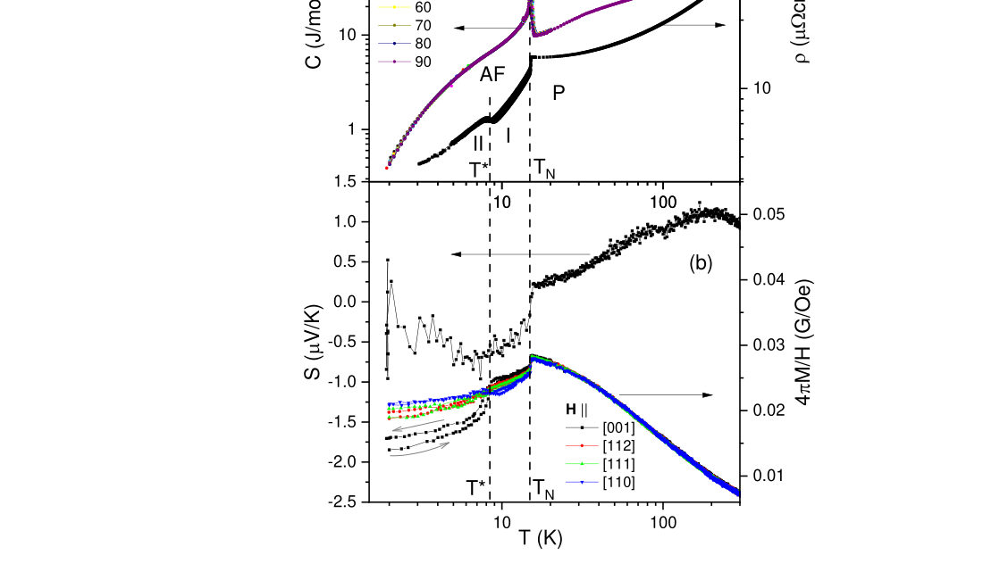
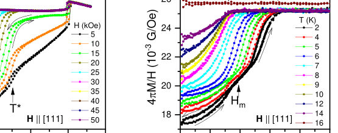

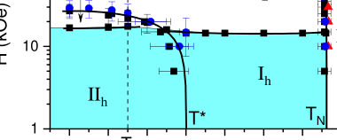
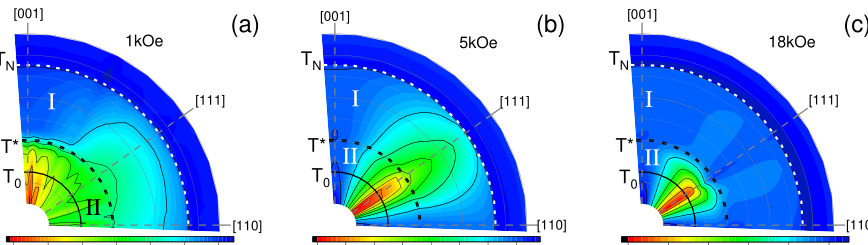
Summary. This experimental work characterizes the complex magnetic phase diagram of the antiferromagnetic metal GdB6 by measuring magnetization and resistivity under varying magnetic fields and angles. The authors find evidence of dynamic charge stripes and structural distortions that fundamentally alter the magnetic exchange interactions. This work provides a detailed picture of how coupled electron and lattice instabilities govern the material's unusual magnetic anisotropy.
Why it may be interesting. The detailed mapping of magnetic phase diagrams and the explicit connection drawn between charge density wave physics (stripes) and magnetic anisotropy are highly relevant to understanding emergent quantum phenomena in strongly correlated materials.
Main problem. The study investigates the origin of charge transport and magnetization anisotropy in the antiferromagnetic (AF) metal GdB6, focusing on the role of electron and lattice instabilities.
Main result. The research identified 'impeller-type patterns' in the H-phi magnetic phase diagrams and proposed that dynamic charge stripes suppress the RKKY exchange, leading to unusual charge scattering anisotropy.
Method. The study employed detailed measurements of resistivity, magnetization, and X-ray diffraction at low temperatures to map out complex magnetic and electronic phase diagrams.
Model / system. The physical system is GdB6, an antiferromagnetic metal with a cubic lattice and Gd S-type magnetic ions. The analysis focuses on the interplay between magnetic ordering (AF(I) and AF(II) phases) and electronic instabilities like dynamic charge stripes.
Key observables. Magnetization (M), resistivity ($ ho$), magnetic susceptibility ($\chi$), and structural distortions detected via X-ray diffraction.
Important parameters / regimes. Low temperatures (down to helium temperatures), external magnetic fields up to 180 kOe, and angular dependence ($\phi$).
Assumptions / limitations. The analysis assumes the importance of the spin density wave 5d- component in the AF(II) state and links charge fluctuations in stripes to the observed magnetic anisotropy.
Figures summary. Figures detail H-T, H-phi, and 3D H-theta-phi phase diagrams, showing transitions between AF phases I and II, and mapping angular dependencies of resistivity and susceptibility.
Paper structure. The paper systematically presents measurements across various magnetic field, temperature, and angle regimes to construct comprehensive magnetic phase diagrams, linking structural distortions (Jahn-Teller) to electronic instabilities (charge stripes) and magnetic behavior.
The origin of charge transport and magnetization anisotropy was studied in GdB6, an antiferromagnetic (AF) metal (Néel temperature TN ~ 15.5 K) with cubic lattice and Gd S-type magnetic ions. Both small static Jahn-Teller distortions and nanoscale electronic instabilities (dynamic charge stripes) were found in precise low temperature X-ray diffraction measurements. The detailed magnetic field (H) vs temperature (T) phase diagrams were constructed with two main magnetic phases AF(I) and AF(II). Using the angular phi-dependences of magnetoresistance and magnetization, impeller-type patterns of the H-phi magnetic phase diagrams in the (110) and (111) planes were found at helium temperatures, which included the AF phases I and II separated from each other by radial and circular boundaries. The results argue in favor of the important role of the spin density wave 5d- component in the magnetic structure of AF(II) state. Charge fluctuations in stripes are proposed to be responsible for the suppression of the Ruderman-Kittel-Kasuya-Yoshida (RKKY) indirect exchange between the first and second neighboring Gd3+ ions located along the <100> and <110> directions. These dynamic charge stripes and vibrationally coupled Gd-Gd pairs produce unusual anisotropy of charge scattering and the impeller-type diagrams in GdB6 with S-type magnetic ion.
Authors: Jun Pan, Ming Li
Type: theory · Category: statistical mechanics · PDF: https://arxiv.org/pdf/2608.26572v1
Analysis basis: full PDF text, analyzed in chunks
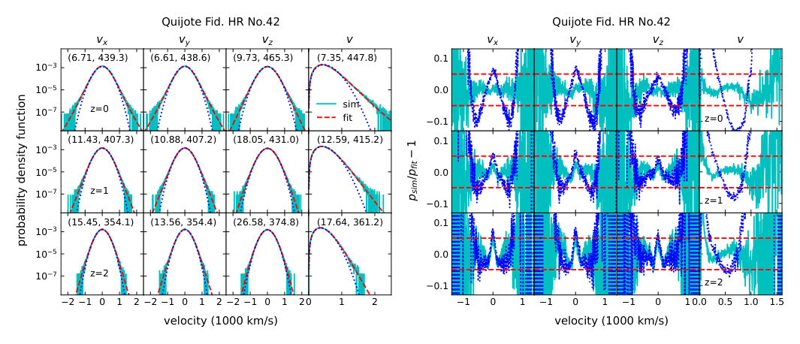
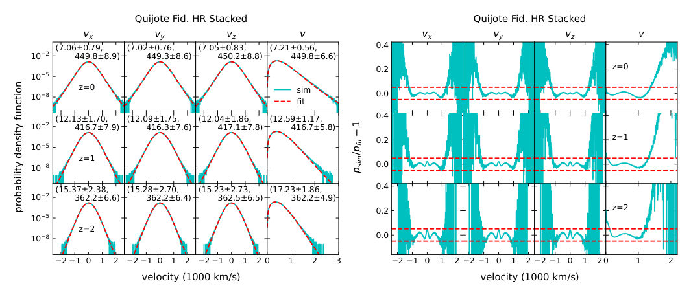
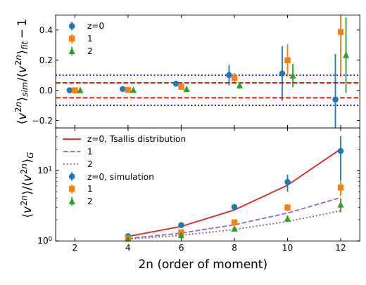
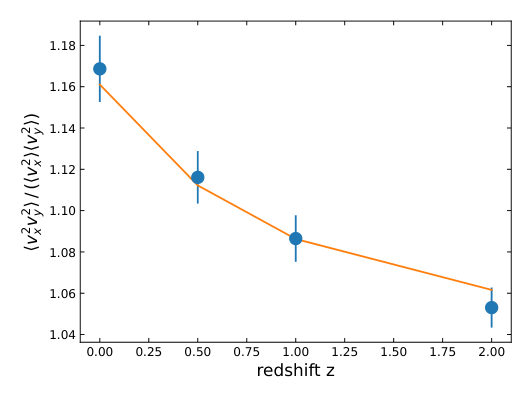
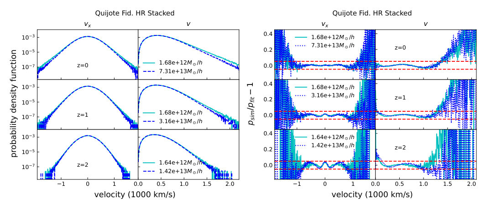
Summary. This paper models the peculiar velocity distribution of dark matter halos using Tsallis statistics, a tool from non-extensive statistical mechanics. By fitting simulations, the authors show that the Tsallis distribution accurately captures the non-Gaussian, non-equilibrium nature of these velocities. This provides a powerful, ready-to-use prior for cosmological analyses like kSZ effect measurements.
Why it may be interesting. The application of non-extensive statistical mechanics (Tsallis statistics) to astrophysical systems like dark matter halos provides a concrete example of how generalized statistical frameworks can model complex, non-equilibrium dynamics in large-scale structure.
Main problem. Characterizing the peculiar velocity distribution of dark matter halos, which are far from thermal equilibrium, to improve understanding of the gravitational evolution of the cosmic web.
Main result. The Tsallis distribution provides an accurate and concise model for the halo peculiar velocity distribution, achieving good fit quality for velocities below 1000 km/s across redshifts $z=0-2$.
Method. The authors use maximum-likelihood fitting and theoretical superstatistics frameworks to model the non-equilibrium velocity distribution.
Model / system. The system is dark matter halos in the $\Lambda$CDM model, whose peculiar velocities are analyzed. The model employs Tsallis statistics, derived from non-extensive statistical mechanics, to describe the non-Gaussian nature of the distribution.
Key observables. The one-point distribution function of halo peculiar velocities, $p(v)$, and its moments ($\langle v^{2n} angle$).
Important parameters / regimes. The Tsallis parameters, the invariant index $\kappa_0$ and the characteristic velocity $\sigma_{\kappa_0}$.
Assumptions / limitations. The zeroth-order approximation (a single Tsallis function) is assumed to be sufficient, despite the theoretical possibility of a superposition of Tsallis functions. The standard halo model framework is also utilized.
Figures summary. Figures compare the simulated $p(v)$ against the best-fit Tsallis models across different redshifts and halo masses, showing good agreement for low velocities.
Paper structure. The paper develops from the limitations of the standard halo model to the application of Tsallis statistics, deriving the model from superstatistics, fitting it to N-body simulation data, and finally discussing the physical implications of the derived parameters.
Dark matter halos, which host galaxies and galaxy clusters, have peculiar velocities far from thermal equilibrium. Characterizing the nonlinear and non-Gaussian features of this velocity distribution improves our understanding of the gravitational evolution of the cosmic web and supports related cosmological applications. We endeavor to establish a connection between the peculiar velocity distribution of halos and nonequilibrium statistical mechanics, with the objective of obtaining a model that is both concise and accurate for practical applications. We extracted halo samples from large N-body simulations and performed maximum-likelihood fits to the peculiar velocity distributions using a two-parameter Tsallis model, derived from non-extensive statistical mechanics. On the theoretical side, we reformulated the halo distribution in the superstatistics framework by means of a generalized Gram-Charlier expansion based on the gamma distribution. For halo peculiar velocities below 1000 km/s, the Tsallis model achieves 5 percent accuracy over z=0-2, with performance improving toward lower redshifts. Our results show that the halo velocity distribution becomes increasingly non-Gaussian and departs further from equilibrium over time. The best-fit parameters depend only weakly on mass, though low-mass halos exhibit slightly stronger non-Gaussianity. The two parameters, especially the velocity dispersion, offer promising probes of cosmological parameters. Theoretically, we find that in general the halo peculiar velocity distribution function is expressible as a superposition of a series of Tsallis distribution functions, while simulation results demonstrate that the zeroth-order approximation, namely a single Tsallis function, already achieves sufficient accuracy.
Authors: Alice Barthe
Type: theory · Category: quantum information and computing · PDF: https://arxiv.org/pdf/2608.26268v1
Analysis basis: full PDF text, analyzed in chunks
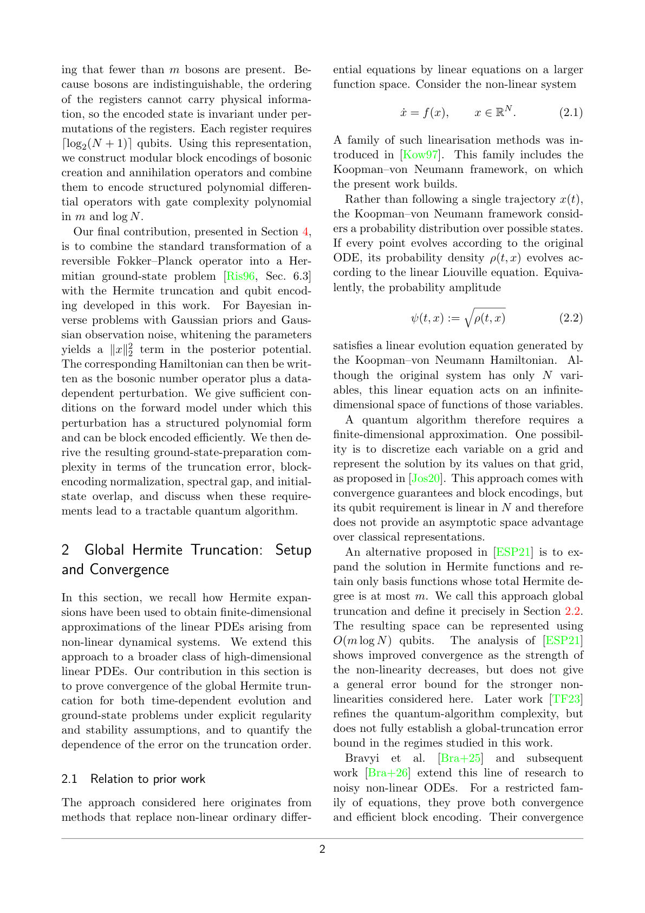
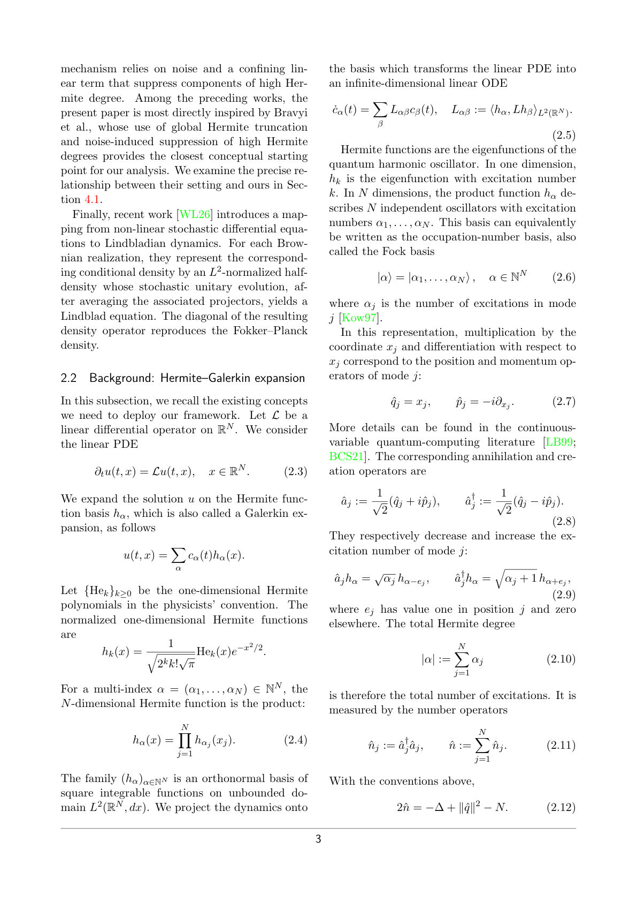
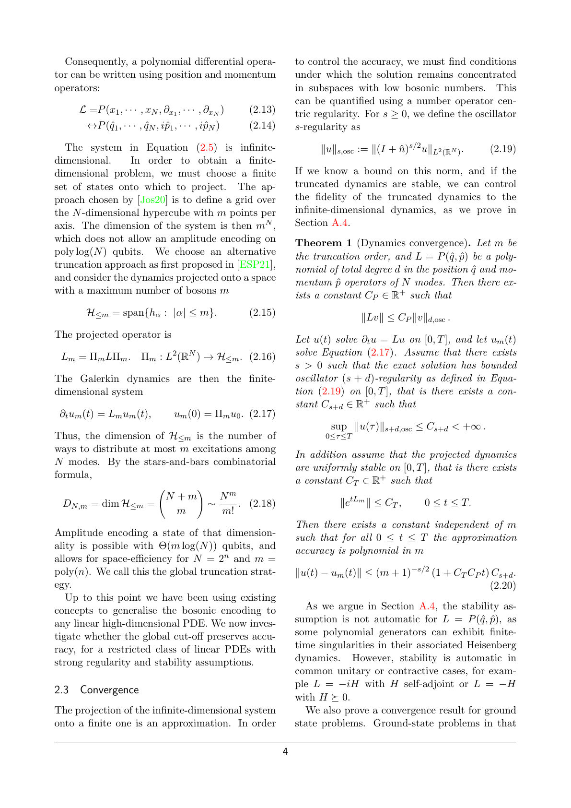
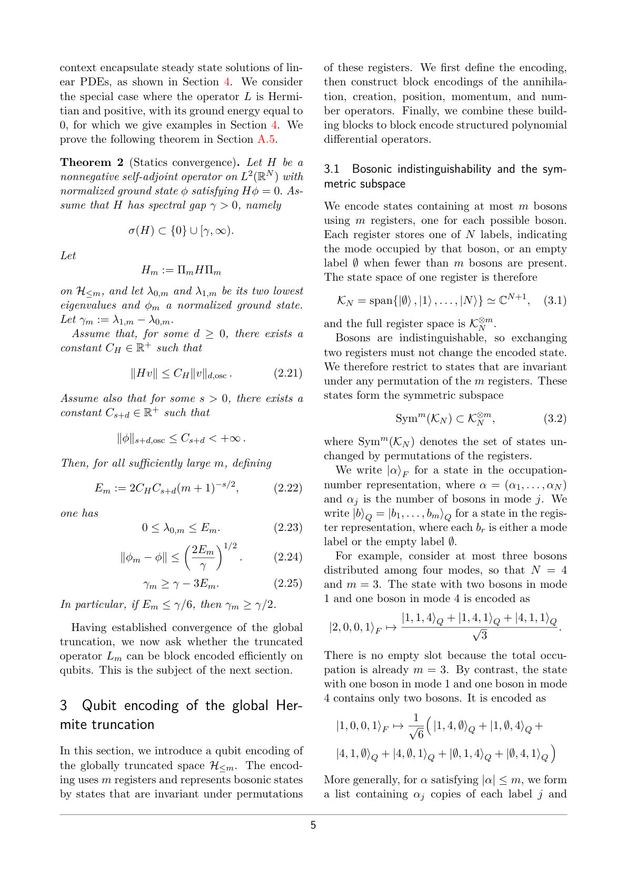
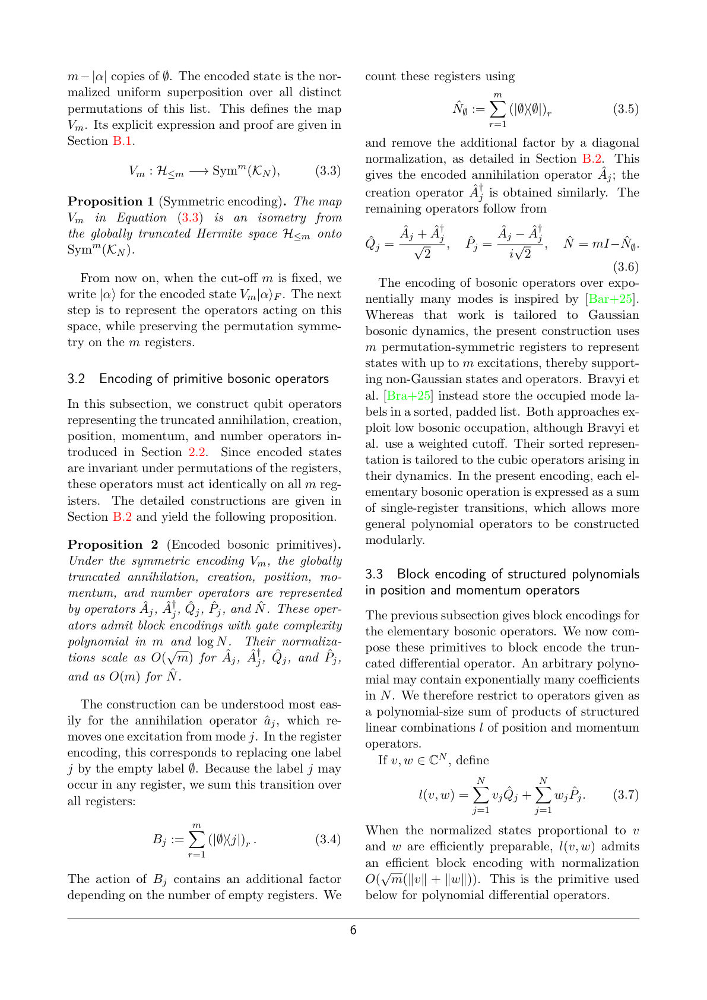
Summary. This paper develops a quantum algorithm framework to solve high-dimensional PDEs and Bayesian inverse problems by mapping the dynamics onto a linear system solvable via the Hermite basis. It achieves a space-efficient qubit encoding scaling as $O(m \log N)$ and proves convergence for the approximation, making complex physical inference problems tractable on quantum hardware.
Why it may be interesting. This work provides a concrete, scalable quantum computational pathway for solving complex, high-dimensional physical problems (like those encountered in quantum field theory or statistical physics) by leveraging bosonic encoding techniques.
Main problem. The paper addresses the challenge of designing quantum algorithms to solve high-dimensional Partial Differential Equations (PDEs) and Bayesian Inverse Problems.
Main result. It establishes a framework that efficiently encodes the dynamics and posterior state preparation using a qubit representation scaling as $O(m \log N)$ qubits, and proves convergence theorems for the truncation.
Method. The core method involves mapping non-linear dynamics to linear PDEs, expanding solutions in the Hermite function basis (Galerkin), and implementing the resulting operators using structured block encodings on qubits.
Model / system. The system involves high-dimensional probability amplitudes governed by linear PDEs (like Fokker-Planck equations) or the posterior distribution in Bayesian inference. The dynamics are discretized by truncating the Hermite expansion to a finite degree $m$.
Key observables. The total Hermite degree ($m$), the reduced Hermite matrix ($\Gamma^{(j)}$), and the effective Hamiltonian ($H$ or $H_y$) governing the state evolution.
Important parameters / regimes. The truncation order $m$ and the number of variables $N$ dictate the qubit scaling $O(m \log N)$. Convergence depends on regularity and stability assumptions.
Assumptions / limitations. Convergence proofs require explicit regularity and stability assumptions on the underlying PDEs and dynamics. The efficient encoding relies on the structured polynomial form of the differential operators.
Paper structure. The paper progresses from establishing the mathematical framework (Koopman-von Neumann, Hermite basis, global truncation) to proving convergence theorems for both time-dependent and ground-state problems. It then details the efficient qubit encoding of the resulting structured operators and applies this machinery to solve Bayesian inverse problems by mapping them to ground-state preparation.
The Koopman-von Neumann framework has been proposed to design quantum algorithms for non-linear dynamics. It maps a non-linear ordinary differential equation to a linear partial differential equation (PDE) governing a probability amplitude. Previous works represents this amplitude in the Hermite-function basis, equivalently as a bosonic state, and truncates the total Hermite degree to obtain a representation over $Θ(m\log N)$ qubits, where $N$ is the number of variables and $m$ the truncation order. We extend this approach to a broader class of linear PDEs whose differential operators have a structured polynomial form. We prove convergence of the truncation for both time-dependent dynamics and gapped ground-state problems under explicit regularity and stability assumptions. We then introduce a qubit encoding that supports efficient block encodings of the truncated operators. Finally, we apply the framework to Bayesian inverse problems with Gaussian priors and observation noise, reducing posterior-state preparation to the preparation of a structured Hamiltonian's ground state.
Authors: Christoph Hirche, Ian George, Theshani Nuradha, Mark M. Wilde
Type: theory · Category: quantum information and computing · PDF: https://arxiv.org/pdf/2608.27171v1
Analysis basis: full PDF text, analyzed in chunks
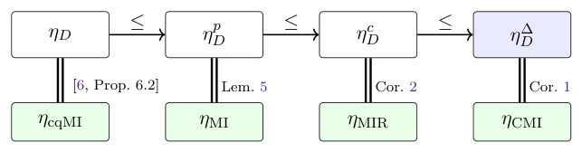
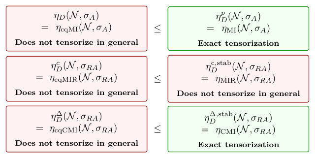
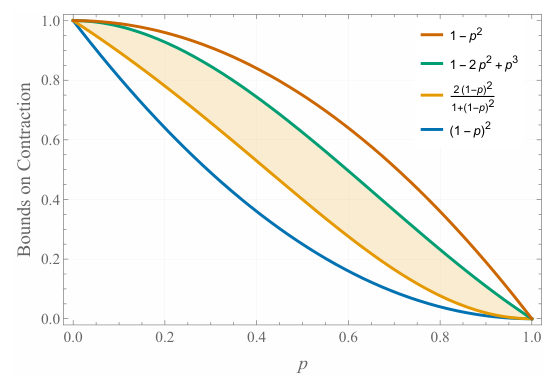
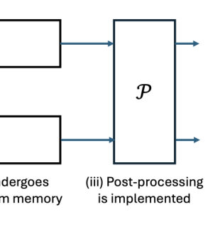
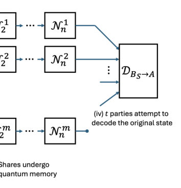
Summary. This work introduces conditional contraction coefficients to provide a robust measure of information loss in quantum channels when quantum side information is present. It unifies the analysis of information contraction by extending data-processing inequalities to include reference systems. The results establish fundamental limits for quantum networks and memory capacity by providing a comprehensive theoretical framework.
Why it may be interesting. The development of generalized information measures that explicitly account for side information is crucial for accurately modeling realistic quantum communication protocols and network constraints.
Main problem. The paper addresses the challenge of quantifying information loss (distinguishability loss) through quantum channels when arbitrary quantum side information (reference systems) is present.
Main result. It introduces conditional contraction coefficients, establishing a unified framework for analyzing information contraction in quantum networks, and proving key equalities for the quantum relative entropy.
Method. The authors develop a general mathematical framework by defining novel contraction coefficients based on the difference of divergences involving the reference system, extending existing data-processing inequalities.
Model / system. The analysis centers on general quantum channels ($\mathcal{N}$) acting on quantum states, explicitly incorporating an arbitrary quantum reference system ($R$) to model side information.
Key observables. Conditional contraction coefficients ($\eta_{\Delta}^D(\mathcal{N})$), standard contraction coefficients ($\eta_D(\mathcal{N})$), and the conditional mutual information.
Important parameters / regimes. The type of quantum divergence used (e.g., trace distance, quantum relative entropy) and the presence/nature of the reference system $R$.
Assumptions / limitations. The framework relies on the ability to define and manipulate divergences that account for side information, with specific results depending on properties like the extended direct-sum property.
Figures summary. Figure 1 summarizes relationships between various contraction coefficients for the relative entropy, showing inequalities and equalities.
Paper structure. The paper progresses by defining the novel conditional contraction coefficients, proving key identities (especially for relative entropy), establishing general inequalities between different types of coefficients, and concluding with applications to network bounds and memory limits.
Contraction coefficients quantify the loss of distinguishability induced by a channel and provide a strong form of the data-processing inequality. While standard contraction coefficients ignore auxiliary quantum systems, existing extensions based on complete contraction coefficients require the compared states to have identical reference marginals. In this work, we introduce conditional contraction coefficients, a novel family that incorporates arbitrary quantum reference systems by subtracting the distinguishability already present in the reference system. We develop a general framework for contraction coefficients with such quantum side information, including the corresponding strong-data-processing-inequality (SDPI) constants, expansion coefficients, and relative contraction coefficients. For the trace distance, we show that the optimization can be restricted to orthogonal input states. For the quantum relative entropy, we prove that its conditional contraction coefficient is exactly equal to the contraction coefficient of the conditional mutual information, extending the classical correspondence between relative-entropy contraction and mutual-information contraction to the setting with quantum side information. More generally, we identify structural properties of divergences required for these results and discuss extensions beyond the relative entropy. These results establish a unified framework for analyzing information contraction in quantum network settings, where quantum side information and distributed correlations are intrinsic features of the information-processing task. Applications include an extension of the Polyanskiy-Wu bounds on mutual information contraction, new perspectives on mixing times, and fundamental limits on quantum memories.
Authors: Omer Gurevich, Maor Matityahu, Tal Mor, Aryeh Lev Zabokritskiy
Type: both · Category: quantum information and computing · PDF: https://arxiv.org/pdf/2608.26894v1
Analysis basis: full PDF text, analyzed in chunks
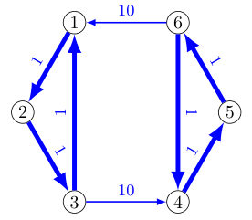
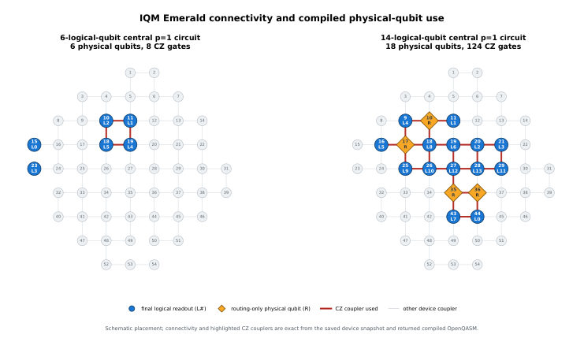
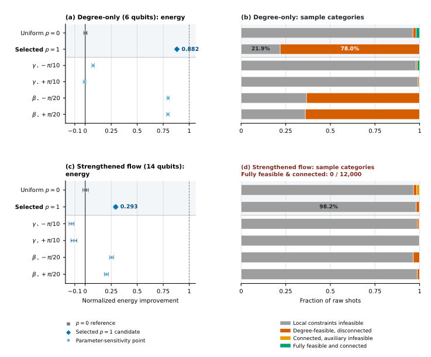
Summary. This work develops a mathematically rigorous method to correct connectivity flaws in QUBO models designed for the Vehicle Routing Problem. By incorporating a single-commodity flow repair into the Hamiltonian, the authors guarantee that the lowest energy state corresponds to a valid, connected route. The research combines theoretical proof with hardware benchmarking to characterize the feasibility of mapping complex combinatorial problems onto quantum processors.
Why it may be interesting. It directly tackles the gap between theoretical QUBO formulation and physical realizability by providing a rigorous method to enforce global constraints (connectivity) necessary for complex combinatorial optimization problems on quantum hardware.
Main problem. The paper addresses the critical issue of ensuring global connectivity in QUBO models used for the Vehicle Routing Problem (VRP), where initial formulations only enforce local cycle covers.
Main result. The authors construct and prove a polynomial-size QUBO repair using capped single-commodity flow that guarantees the ground state corresponds to a connected and cost-optimal routing.
Method. The methodology involves reformulating the VRP constraints into a flow-augmented QUBO, followed by resource analysis (qubits, gates) and benchmarking on quantum hardware simulators and actual quantum processors.
Model / system. The system is the fixed-fleet, homogeneous, uncapacitated VRP, modeled using an arc-based QUBO Hamiltonian. The core challenge is augmenting the Hamiltonian to enforce single-commodity flow constraints to guarantee connectivity.
Key observables. Connectivity gap, logical problem qubits required, number of written Hamiltonian interactions, and the probability of observing disconnected ground states on quantum hardware.
Important parameters / regimes. Number of customers (N), number of routes (K), and the size of the graph (E).
Assumptions / limitations. The analysis assumes the VRP is fixed-fleet, homogeneous, and uncapacitated. The quantum results are explicitly stated to characterize compilation limitations rather than asymptotic algorithmic advantages.
Figures summary. The notes mention a counterexample (N=6, K=1) illustrating the cost difference between disconnected cycle covers and valid Hamiltonian cycles, and references to resource scaling comparisons between flow-augmented and position-indexed encodings.
Paper structure. The paper first identifies the connectivity failure in degree-only arc Hamiltonians, proposes the flow-augmented QUBO repair, analyzes the resource scaling and theoretical guarantees, and concludes with experimental characterization on quantum hardware using diagnostic counterexamples.
We revisit a degree-only arc Hamiltonian for fixed-fleet, homogeneous, uncapacitated vehicle routing. Because its local penalties define only a cycle cover, ground states may contain customer cycles disconnected from the depot. We construct a polynomial-size quadratic unconstrained binary optimization (QUBO) repair using capped single-commodity flow and prove that every ground-state routing is connected and cost-optimal under explicit penalty assumptions. For $N-1$ customers and $K$ nonempty routes, the unreduced encoding uses exactly $|E|(1+\lceil\log_2(N-K+1)\rceil)$ logical problem qubits. A reversible compute--phase--uncompute realization evaluates the flow penalties in $O(N^2\log N+N\log^2N)$ logical gates on a complete graph with $O(\log N)$ reusable workspace and no product register. On complete loopless graphs, a depot-delimited single-sequence position encoding uses fewer problem qubits and fewer written terms when the flow-word length grows. Conversely, the flow model achieves a smaller structured logical-gate upper bound under a common reversible accounting model. Exact audits of the Hamiltonian and circuit implementation, combined with a $1{,}200$-matrix classical benchmark, verify the formulation and quantify the connectivity gap. Finally, a 32,000-shot Amazon Braket task on IQM Emerald characterizes depth-one termwise Ising circuits on a diagnostic $N = 4,\, K = 1$ counterexample instance. In the degree-only circuit, $78.05\%$ of selected $p=1$ shots realize the invalid disconnected ground state; the reduced 14-qubit flow-augmented circuit yields no fully feasible sample. These device results characterize mapped Hamiltonians and compilation rather than an asymptotic routing solution advantage.
Authors: Tafat Weiss Attia, Itay Horin, Betzalel Bazak
Type: theory · Category: other · PDF: https://arxiv.org/pdf/2608.26865v1
Analysis basis: full PDF text, analyzed in chunks
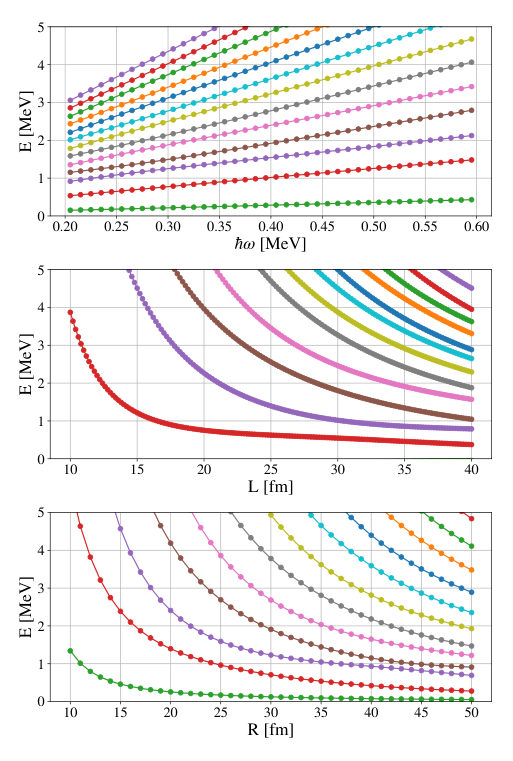
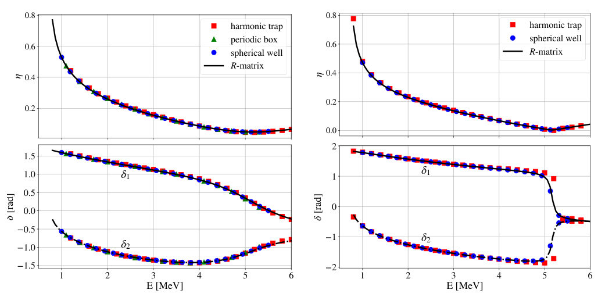
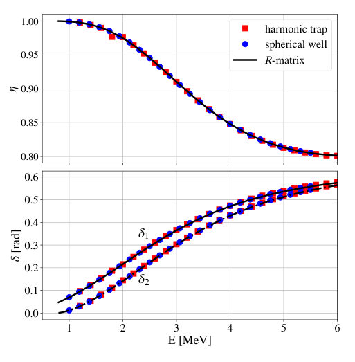
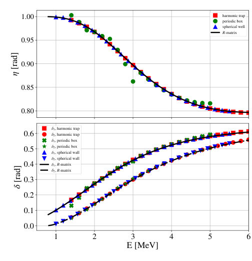
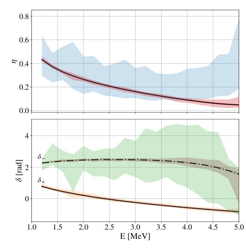
Summary. This paper develops a methodology to extract continuum scattering parameters (phase shifts and inelasticity) for a Helium cluster model by fitting multiple discrete energy levels obtained from different artificial confinement potentials (HO, hard wall, box). The results confirm the consistency of these methods when compared to a continuum R-matrix calculation, while also quantifying the sensitivity of the extracted observables to spectral noise and the specific confinement geometry used.
Why it may be interesting. This work is highly relevant as it provides a rigorous, quantitative benchmark for using artificial confinement potentials to calculate fundamental scattering properties in few-body and nuclear physics systems, which is a key area for theoretical AMO/open quantum systems.
Main problem. The paper addresses the theoretical challenge of extracting continuum scattering information, which is defined by asymptotic wave functions, from discrete, bound-state-like spectra generated by finite-basis or finite-domain calculations.
Main result. The study demonstrates that multiple confinement geometries (HO, hard wall, cubic box) yield consistent results for scattering observables when fitted using an overdetermined approach, providing a controlled benchmark for such methods.
Method. The authors employ a unified quantization-condition framework, fitting multiple confined energy levels at a common scattering energy to determine coupled-channel observables like phase shifts and inelasticity.
Model / system. The system modeled is a two-channel cluster model of Helium-4, involving open channels like $^3 ext{H}+ ext{p}$ and $^3 ext{He}+ ext{n}$, and includes long-range Coulomb interactions in one channel.
Key observables. Two-channel phase shifts ($\delta_1, \delta_2$) and the inelasticity ($\eta$).
Important parameters / regimes. The comparison is made across three confinement geometries: Harmonic-Oscillator (HO) trap, spherical hard wall, and periodic cubic box.
Assumptions / limitations. The analysis assumes that matching the number of usable constraints across different geometries allows for a fair comparison, and it notes that spectral uncertainties are amplified near trap-function poles.
Figures summary. Figures illustrate the extracted observables (e.g., $3P_1$ partial wave) across different geometries compared to the R-matrix reference, and show the propagation of spectral uncertainties for different traps.
Paper structure. The paper first establishes the theoretical framework by comparing confinement methods (HO, hard wall, box) against a continuum R-matrix benchmark. It then details the fitting procedure using multiple energy crossings to extract the three key scattering parameters, concluding with a detailed analysis of the stability and limitations of each confinement geometry.
Artificial confinement encodes continuum scattering information in discrete, bound-state-like spectra, allowing reaction observables to be extracted with finite-basis or finite-domain methods. We apply this strategy to a two-channel cluster model of $^4$He with open $^3$H+p and $^3$He+n channels. We extract coupled-channel observables from spectra generated by a harmonic-oscillator (HO) trap, a spherical hard wall, and, within a single-partial-wave truncation, a periodic cubic box. The three geometries are formulated in a unified quantization-condition framework and benchmarked against a continuum $R$-matrix calculation. Above the second-channel threshold, several confined levels at a common scattering energy are combined in an overdetermined fit to determine two phase shifts and an inelasticity. Without Coulomb interactions, all three geometries yield consistent results for the $^1S_0$ and $^3P_1$ partial waves. With Coulomb interactions in the charged $^3$H+p channel, the HO and spherical-wall results also agree closely with the continuum reference. A Monte Carlo propagation study shows that spectral uncertainties are amplified near trap-function poles and along poorly conditioned directions associated with the inelasticity and phase-shift difference, whereas the phase-shift sum remains comparatively robust. These results provide a controlled benchmark for confinement-based scattering methods and delineate their strengths and limitations for future few-body and ab initio reaction calculations.
Authors: Mehul Shah, Robert Fiszer, Marek Perkowski
Type: theory · Category: quantum information and computing · PDF: https://arxiv.org/pdf/2608.27430v1
Analysis basis: full PDF text, analyzed in chunks
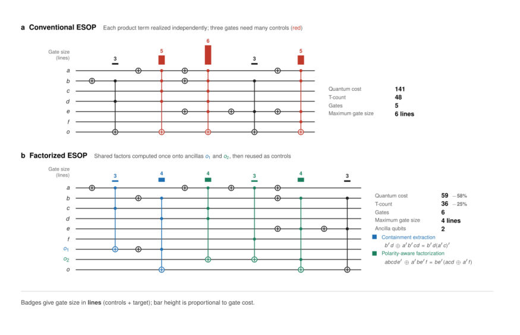
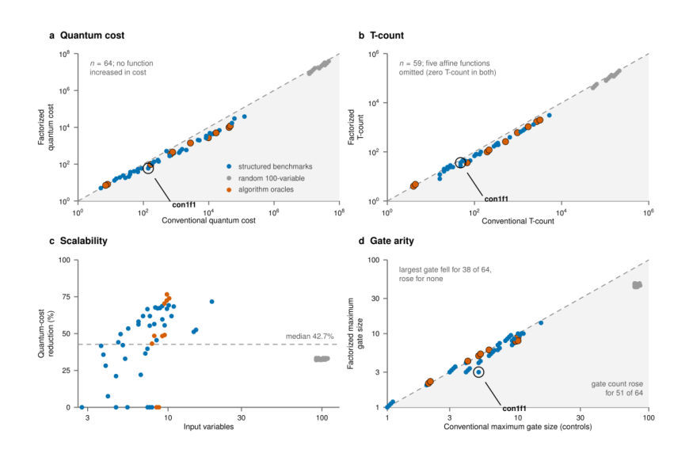
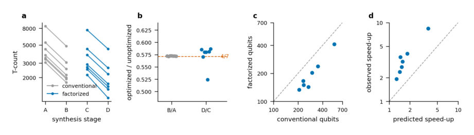
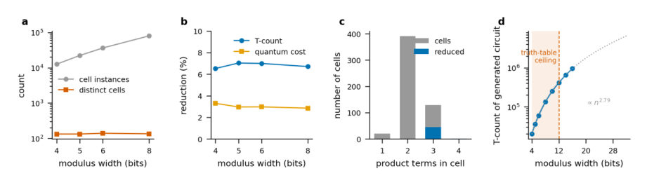
Summary. This paper introduces a novel factorized Boolean representation technique to optimize the synthesis of quantum circuits from Boolean specifications. By exploiting algebraic relationships like containment and complementary polarity, the method reduces the critical resource cost—the control count of the widest gate—which is superlinearly expensive. This optimization is shown to yield circuits that are significantly cheaper to execute than those derived from standard minimization techniques.
Why it may be interesting. While focused on digital quantum computation, the rigorous resource analysis and optimization techniques developed for circuit synthesis provide valuable theoretical tools for understanding resource scaling in complex quantum protocols.
Main problem. The core challenge is efficiently translating complex Boolean specifications into resource-optimized reversible quantum circuits for fault-tolerant quantum computation.
Main result. A novel factorized representation method was shown to reduce the superlinear cost (widest gate control count) of quantum circuits, achieving significant reductions (e.g., median 42.7% quantum cost reduction) compared to conventional synthesis methods.
Method. The authors developed a two-stage factorization procedure leveraging containment and complementary-polarity relationships among product terms to create a factorized Boolean representation.
Model / system. The model is the quantum circuit synthesis process, requiring the transformation of Boolean logic into reversible quantum gates (Clifford+T basis) suitable for error-corrected hardware.
Key observables. Quantum cost (superlinear cost), T-count, qubit count, and the arity of the widest gate.
Important parameters / regimes. The cost is dominated by the control count of the widest operation, which scales superlinearly with the number of controls.
Assumptions / limitations. The factorized circuit is guaranteed not to increase either the quantum cost or T-count relative to the original representation, although some advantage is lost upon full circuit uncomputation.
Figures summary. Figures compare resource reductions (quantum cost, T-count) across 64 functions, demonstrating that factorization reduces gate arity, and later figures compare resource usage across multiple optimization stages for complex oracles.
Paper structure. The paper introduces the problem of quantum synthesis cost, details the factorized representation method (using containment and polarity), validates the approach on structured benchmarks and complex oracles (like modular exponentiation), and compares the resulting circuits against state-of-the-art circuit-level optimizers.
Quantum algorithms promise advantages beyond classical reach, but running them on error-corrected hardware requires translating Boolean specifications into reversible circuits, and the resources that translation demands determine what is executable. Established methods minimize a Boolean expression and map it to a circuit, assuming the minimized form is best. Here we show that minimized expressions retain algebraic structure minimization cannot reach, arising from containment and complementary-polarity relationships among their terms, and that extracting it yields circuits cheaper to execute despite having more operations. The decisive quantity is not a circuit's operation count but the control count of its widest operation, a superlinear cost; extracting shared factors trades a few wide operations for many narrow ones and reduces qubit count. Across benchmarks and oracles from quantum search and factoring algorithms, at the representation level the transformation never increases either cost measure, a guarantee from its construction. Translation to an executable circuit returns part of that advantage, since auxiliary lines must be uncomputed, yet the factorized circuit still left a leading circuit-level optimizer reaching lower final counts, and faster, than unaided. The representation of a computation is therefore itself a resource, optimizable before compilation and distinct from both logic minimization and circuit-level optimization.
Authors: Kishor Bharti, Tobias Haug, Andrew Tanggara
Type: theory · Category: quantum information and computing · PDF: https://arxiv.org/pdf/2608.26272v1
Analysis basis: full PDF text, analyzed in chunks
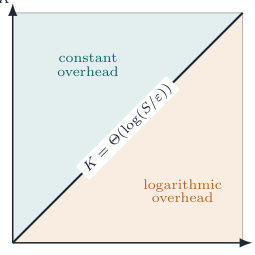
Summary. This work establishes fundamental limits on the resources needed for fault-tolerant quantum computation, particularly concerning the overhead required for quantum memory. It proves that while constant relative overhead is possible for wide computations, an unavoidable logarithmic cost exists in the cumulative spacetime overhead. The findings provide crucial scaling laws for designing practical, large-scale quantum processors.
Why it may be interesting. It establishes rigorous, fundamental resource bounds on the overhead required for fault tolerance, which directly impacts the feasibility estimates for large-scale quantum computation architectures.
Main problem. The paper determines the fundamental limits on the cumulative spacetime overhead required for achieving fault-tolerant quantum computation.
Main result. It shows that while constant relative overhead is achievable for sufficiently wide computations, an unavoidable logarithmic contribution to the cumulative spacetime overhead exists for quantum memory.
Method. The analysis uses information-theoretic bounds derived from the probability of surviving erasure events and compares these to the required physical resources using adaptive protocol models and spacetime-code constructions.
Model / system. The primary model is quantum memory—preserving an arbitrary quantum state for a duration $S$ under independent erasure noise. The analysis extends to general fault-tolerant circuits using spacetime-code descriptions.
Key observables. Minimum worst-case physical storage locations ($Cmin$), relative overhead ($ rac{Cmin}{KS}$), and physical circuit size ($ ext{CFT}$).
Important parameters / regimes. Logical qubit count ($K$), storage duration ($S$), target error ($\epsilon$), and the ratio $\log(S/\epsilon)/K$.
Assumptions / limitations. The analysis assumes an optimistic noise model (independent erasure noise) and general adaptive protocols, though the limitation is argued to persist for general noise.
Figures summary. Figure 1 illustrates the optimal relative overhead controlled by the ratio $\log(S/\epsilon)/K$, showing a crossover point where constant relative overhead becomes possible.
Paper structure. The paper progresses by first establishing the memory overhead bound ($ ext{Cmin}$), then extending this to general circuit overhead ($ ext{CFT}$), and finally analyzing the fundamental scaling using spacetime-code representations to derive the width-duration trade-off.
The threshold theorem states that quantum computations can be made reliable below a physical error threshold, at the cost of additional physical qubits and circuit depth. Recent work has reduced these space and time overheads to polylogarithmic or nearly logarithmic scalings, but whether the cumulative spacetime overhead can be constant has remained unclear. Here, we show that even for the simplest task of preserving quantum information in a quantum memory, under an optimistic noise model and allowing general adaptive protocols, there is an unavoidable logarithmic contribution to the cumulative spacetime overhead. This additional cost can nevertheless be shared among many logical qubits, so sufficiently wide computations, including standard implementations of Shor's algorithm, may still achieve constant relative overhead. We further give a positive-rate CSS code construction that attains the memory bound, identify sufficient conditions under which the same scaling extends from quantum memory to fault-tolerant circuit implementations, and derive circuit-size bounds for subsystem spacetime codes. Our work establishes fundamental limits on the resources required for quantum fault tolerance.
Authors: Muntafa M. Mahi, Quazi D. M. Khosru, M. Zahid Hasan, Mahbub Alam, Md Shafayat Hossain
Type: theory · Category: strongly correlated electrons · PDF: https://arxiv.org/pdf/2608.26751v1
Analysis basis: full PDF text, analyzed in chunks
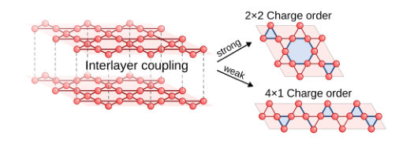
Summary. This work uses first-principles calculations to study how interlayer coupling controls the charge ordering in Kagome metals like $ ext{AV}_3 ext{Sb}_5$. By tuning the interlayer distance, the researchers demonstrate a clear transition from a $4 imes 1$ instability characteristic of the 2D monolayer to a $2 imes 2$ instability characteristic of the bulk. This establishes interlayer coupling as the key parameter unifying the competition between these two distinct charge-ordered states.
Why it may be interesting. The concept of a structural parameter (interlayer spacing) acting as a continuous tuning knob to select between competing electronic ground states (CDW wave vectors) is highly relevant to understanding phase diagrams in layered quantum materials.
Main problem. The paper addresses the unresolved question of the microscopic origin and competition between different charge ordering wave vectors ($2 imes 2$ vs. $4 imes 1$) in Kagome metals.
Main result. Interlayer coupling acts as a crucial control parameter, unifying the understanding of how the system transitions between the $4 imes 1$ (2D) and $2 imes 2$ (3D/Bulk) charge-ordered states.
Method. The study employs first-principles calculations, specifically analyzing the phonon spectrum instability by systematically tuning the interlayer separation using Density Functional Theory (DFT).
Model / system. The physical system is the Kagome metal $ ext{AV}_3 ext{Sb}_5$ ($ ext{A} = ext{K}, ext{Rb}, ext{Cs}$), where the interlayer coupling is varied from a monolayer limit to a bulk limit.
Key observables. Phonon spectrum instability (phonon softening), charge ordering wave vectors ($\mathbf{q} = (1/4, 0, 0)$ for $4 imes 1$ and M-point for $2 imes 2$), and the free energy gain associated with these orders.
Important parameters / regimes. Interlayer separation ($c$), which is tuned from the monolayer limit to the bulk limit, serving as the primary control parameter.
Assumptions / limitations. The analysis assumes that the observed instabilities are governed by the lattice dynamics and that interlayer coupling provides a systematic mechanism linking the competing orders.
Figures summary. Figures illustrate the schematic relationship between interlayer coupling and the competition between $4 imes 1$ and $2 imes 2$ instabilities, and show the evolution of phonon instabilities as the interlayer distance is varied.
Paper structure. The paper systematically investigates the lattice instability by first examining the monolayer limit (finding $4 imes 1$ instability) and then gradually increasing the interlayer coupling by reducing the spacing, observing the progressive softening and emergence of the $2 imes 2$ instability.
Charge orders in the kagome metals AV$_3$Sb$_5$ sit at the center of a rich phase diagram that also includes superconductivity, nematicity, and signatures of time-reversal-symmetry breaking. Yet even the basic question of which charge ordering wave vectors are intrinsic, and which are selected by dimensionality and lattice coupling, remains unsettled. Importantly, the microscopic origin of different charge orders and, in particular, the relationship between the robust bulk $2 \times 2$ charge order and the controversial $4 \times 1$ modulation, which is primarily resolved by surface probes, remains unresolved. Here, we use first-principles calculations to study the role of interlayer coupling in CsV$_3$Sb$_5$ by tuning the interlayer separation from the monolayer limit to the bulk limit. In the monolayer AV$_3$Sb$_5$ (A = Rb, Cs), the phonon spectrum exhibits no instability at the M point; instead, the dominant lattice instability occurs at q = (1/4, 0, 0), consistent with a $4 \times 1$ modulation. As interlayer coupling increases in CsV$_3$Sb$_5$, an M-point phonon progressively softens and becomes unstable already near c = 12.24 Å, evolving into the strong $2 \times 2$ instability characteristic of the bulk. These results identify interlayer coupling as a control parameter at a fixed stoichiometry that links competing $4 \times 1$ and $2 \times 2$ tendencies, providing a unified framework for understanding why multiple charge-order wave vectors coexist and compete in kagome metals.
Authors: Shadan Ghassemi Tabrizi
Type: theory · Category: strongly correlated electrons · PDF: https://arxiv.org/pdf/2608.27112v1
Analysis basis: full PDF text, analyzed in chunks
Summary. This work investigates a proposed quantum number for the Dirac-Coulomb Hamiltonian based on time-reversal symmetry. The authors demonstrate that the operator underlying this quantum number is ill-defined and, crucially, does not commute with the Hamiltonian. Therefore, the proposed quantum number is deemed physically unfounded, despite its apparent mathematical structure.
Why it may be interesting. It provides a rigorous theoretical critique of symmetry-protected quantum numbers in complex many-body systems, which is crucial for developing reliable theoretical models for correlated materials.
Main problem. The paper critically analyzes the validity of a proposed conserved quantum number, derived from a sum of single-electron time reversals, for the many-electron Dirac-Coulomb Hamiltonian.
Main result. The authors conclude that the proposed quantum number does not stand because the underlying operator does not commute with the Hamiltonian, and the formal sum of time-reversal operators is ill-defined due to anti-linearity.
Method. The analysis involves identifying the operator content of the proposed conserved quantity using pseudospin algebra and testing the commutation relation $[H, ext{Operator}] = 0$ against known physical constraints.
Model / system. The system is many-electron atoms or molecules governed by the Dirac-Coulomb Hamiltonian, analyzed within a Kramers basis derived from time-reversal symmetry.
Key observables. The expectation value $\langle K_2^+ angle$ is used as a diagnostic for Kramers contamination; the overlap diagnostic $N-D$ (number of unpaired electrons) is shown to be robust.
Important parameters / regimes. The number of electrons ($N$), the pseudospin projection ($\mu_y$), and the structure of the basis (Kramers pairs).
Assumptions / limitations. The analysis assumes the validity of the matrix representations derived in previous works, but ultimately questions the physical validity of the underlying operator structure.
Figures summary. Not specified in the notes, but the analysis relies on comparing formal operator sums with their matrix representations.
Paper structure. The paper proceeds by first identifying the operator content of the proposed quantum number, then deriving its pseudospin structure, and finally testing its commutation with the Hamiltonian using overlap diagnostics and integral tests.
The square of a sum of single-electron time reversals has been proposed as a conserved quantity with an integer eigenvalue spectrum for the many-electron Dirac-Coulomb Hamiltonian [Phys. Rev. A 94, 052104 (2016)], and its expectation value is in use as a diagnostic of Kramers contamination. This work identifies the operator behind the construction, a component of a pseudospin attached to the chosen Kramers pairs, whose angular-momentum algebra reproduces the reported spectrum and yields the eigenvectors in closed form. The label $k$ entering the proposed quantum number $-k^2$ is twice the magnitude of a pseudospin projection onto an axis fixed by the basis and changes when the Kramers pairs are rephased. The commutation with the Hamiltonian is unfounded, and the proposed quantum number does not stand.
Authors: Corey Jones, Nikita Sopenko, Ryan Thorngren
Type: theory · Category: other · PDF: https://arxiv.org/pdf/2608.26456v1
Analysis basis: full PDF text, analyzed in chunks
Summary. This theoretical paper develops a deep mathematical connection between three concepts: quantum cellular automata, invertible phases of matter, and the algebraic structure of local observables. By using advanced tools from K-theory and operator algebras, the authors prove these three groups are isomorphic, providing a powerful classification tool for topological phases beyond simple lattice models.
Why it may be interesting. It provides deep mathematical connections between algebraic quantum field theory (CFT/QFT), topological order, and discrete symmetries (QCA), which is crucial for understanding the mathematical structure underlying exotic quantum phases.
Main problem. The paper aims to establish a rigorous mathematical framework for classifying invertible phases of matter and relating them to quantum cellular automata (QCA) using infinite-dimensional local algebras.
Main result. The authors establish isomorphisms between the groups of stable QCA, Brauer equivalence classes of invertible quasi-local algebras, and invertible phases for systems over a metric space X.
Method. The methodology involves using K-theory of the symmetric monoidal category of invertible quasi-local algebras and analyzing the algebraic structure of observables derived from conformal field theories.
Model / system. The study concerns topological phases of matter modeled by quasi-local algebras on infinite-dimensional local Hilbert spaces, specifically examining chiral conformal nets like the $c=1/2$ Majorana fermion net and the $(E_8)_1$ net.
Key observables. The group of Brauer equivalence classes of invertible quasi-local algebras, the group of stable QCA, and the group of invertible phases.
Important parameters / regimes. The dimension of the underlying space (e.g., $\mathbb{Z}^2$), the central charge $c$ of the CFT, and the structure of the metric space $X$.
Assumptions / limitations. The analysis relies on generalizing to infinite-dimensional local Hilbert spaces to ensure the isomorphism between QCA and invertible phases holds, contrasting with finite-dimensional cases.
Figures summary. Figure 1 schematically illustrates the mathematical maps connecting QCA, Brauer equivalence classes, and invertible phases.
Paper structure. The paper introduces invertible quasi-local algebras, proves the fundamental isomorphism relating QCA, Brauer classes, and invertible phases, defines the $\Omega$-spectrum using K-theory, and concludes with explicit constructions using known CFTs.
We introduce and study (fermionic and bosonic) invertible quasi-local algebras over uniformly locally finite metric spaces $X$ with infinite-dimensional local von Neumann algebras. We show that the group of Brauer equivalence classes of such algebras is isomorphic to both the group of phases of invertible states and the group of stable equivalence classes of quantum cellular automata over $X\times \mathbb{Z}$. Using K-theory of the symmetric monoidal category of invertible quasi-local algebras and bounded spread isomorphisms, we propose a definition of an $Ω$-spectrum of invertible phases as conjectured by Kitaev. We then show that the $c=\frac{1}{2}$ chiral Majorana fermion net and the $(E_{8})_{1}$ conformal net provide Brauer non-trivial invertible quasi-local algebras, thus providing explicit constructions of non-trivial invertible states and quantum cellular automata on $\mathbb{Z}^{2}$. In addition, we show that the time-slice nets of rational diagonal conformal field theories admit lattice degrees of freedom, which implies the discretization of any holomorphic conformal net is invertible.
Authors: Jordan Cotler, Felipe Hernández
Type: theory · Category: other · PDF: https://arxiv.org/pdf/2608.27350v1
Analysis basis: full PDF text, analyzed in chunks
Summary. This work develops a rigorous theory of quantum chaos by employing Quantum Optimal Transport (QOT) theory as a geometric foundation. It defines a quantum Lyapunov exponent that successfully avoids mathematical divergences inherent in naive generalizations. The key finding is that this quantum exponent recovers the classical maximal Lyapunov exponent in the semiclassical limit, establishing QOT as the unifying tool for the field.
Why it may be interesting. It provides a powerful, geometrically grounded tool (QOT) to quantify chaos in quantum systems, bridging the gap between classical dynamical systems theory and quantum dynamics, which is vital for understanding quantum thermalization and scrambling.
Main problem. The paper addresses the challenge of rigorously extending classical chaos theory, characterized by Lyapunov exponents, to the quantum domain due to the wavelike nature of quantum states and non-commutative phase space geometry.
Main result. Quantum Optimal Transport (QOT) theory provides a unifying mathematical foundation for quantum chaos, leading to a quantum Lyapunov exponent that recovers the classical maximal Lyapunov exponent in the semiclassical limit.
Method. The authors define quantum Lyapunov exponents by leveraging the Wasserstein distance (a metric from QOT) applied to phase-space distributions (like the Husimi distribution) to measure the divergence of quantum states over time.
Model / system. The framework is general, applicable to quantum systems ranging from simple few-body models to complex many-body systems, analyzed through the evolution of quantum states in phase space.
Key observables. Quantum Lyapunov exponents ($\lambda_q$), classical Lyapunov exponents ($\lambda_{cl}$), Out-of-Time-Order Correlators (OTOCs), and the Quantum Optimal Transport distance ($W_p$).
Important parameters / regimes. The semiclassical limit ($\hbar o 0$) is crucial for recovering classical results; the initial separation of states must be carefully chosen to avoid divergences.
Assumptions / limitations. The approach relies on building upon modern noncommutative quantum optimal transport frameworks and defining admissible quantum distances satisfying specific axioms.
Figures summary. Figures illustrate the comparison between classical trajectory divergence, quantum state evolution as extended distributions, and how QOT provides a natural distance metric respecting non-commutativity.
Paper structure. The paper develops the theory by first establishing the need for QOT, then defining the quantum Lyapunov exponent via the time evolution of the QOT distance, and finally proving its connection to the classical expansion rate and comparing it to OTOC diagnostics.
Chaos in classical systems can be characterized by Lyapunov exponents that measure the exponential divergence of nearby trajectories, but directly extending this framework to quantum mechanics has been a persistent challenge. The wavelike nature of quantum states and the non-commutative geometry of quantum phase space obstruct a straightforward generalization of classical chaos theory. Here we develop a rigorous approach to quantum chaos by leveraging quantum optimal transport theory, which provides the missing geometric foundation for measuring distances between extended quantum distributions. We define quantum Lyapunov exponents that naturally avoid divergences encountered when naïvely generalizing classical exponents, and show that in the semiclassical limit they recover the classical global expansion rate, and hence the usual maximal Lyapunov exponent when they coincide. Our framework provides a tight connection between the divergence of classical trajectories and semiclassical phase space evolution, and additionally clarifies the role of out-of-time-order correlators as diagnostics of quantum chaos. These results establish quantum optimal transport as a unifying mathematical foundation for quantum chaos theory, providing new tools to characterize dynamical behavior across the full range of quantum dynamics from simple few-body models to complex many-body systems.
Authors: Gustavo Castro do Amaral
Type: theory · Category: quantum information and computing · PDF: https://arxiv.org/pdf/2608.26886v1
Analysis basis: full PDF text, analyzed in chunks
Summary. This paper addresses the gap in understanding how heterogeneous quantum technologies can form large-scale networks. It proposes a five-level hierarchical model to abstract physical platforms into reusable functionalities. The central argument is that quantum interconnects are crucial enablers that allow this abstraction, thereby enabling the definition of utility functions necessary for strategic, market-like network growth.
Why it may be interesting. It provides a high-level theoretical framework for understanding the necessary architectural evolution of quantum networks, framing interconnects not just as physical links but as abstract enablers of utility.
Main problem. The challenge is developing a framework to explain the evolution of large-scale quantum networks from isolated, heterogeneous technologies into interconnected infrastructures driven by utility rather than mere technical feasibility.
Main result. The authors propose a hierarchical architecture (PP $ ightarrow$ F $ ightarrow$ S $ ightarrow$ A $ ightarrow$ UC) and argue that quantum interconnects are fundamental enablers that allow for the necessary abstraction to define utility functions and enable strategic, agent-based network formation.
Method. The work uses a conceptual modeling approach, proposing a hierarchical abstraction framework and modifying network formation models (like agent-based models) to incorporate utility derived from functional interoperability.
Model / system. The model describes heterogeneous quantum platforms (e.g., quantum dots, trapped ions) connected by quantum interconnects. The system is conceptualized through a five-level hierarchy: Physical Platforms, Functionalities, Services, Applications, and Use-Cases.
Key observables. Utility functions ($U_i$), interoperability parameters ($I_{ij}$), and the degree of abstraction achieved at the functionality level.
Important parameters / regimes. The structure of the utility function, which must be defined independently of the underlying physical platform.
Assumptions / limitations. The core assumption is that quantum interconnects provide sufficient interoperability to decouple network functionalities from specific physical implementations, thereby enabling utility-driven decision-making.
Figures summary. Figures illustrate the transition from a technology-driven strategic landscape to an expected utility-driven landscape, supported by the proposed hierarchical model.
Paper structure. The paper establishes the problem (technology-driven growth), proposes the hierarchical abstraction framework (PP to UC), develops the role of interconnects in enabling functional decoupling, and concludes by showing how this enables utility-based, agent-driven network formation.
The realization of large-scale quantum networks requires more than advances in quantum repeaters, memories, and processors, it requires a framework explaining how heterogeneous quantum technologies evolve from isolated deployments into interconnected infrastructures. While the classical Internet evolved under strong utility incentives associated with resource sharing and communication demands, quantum networking currently lacks dominant applications capable of generating comparable incentives. As a consequence, contemporary quantum networks are largely formed through technology-driven decisions motivated by technical feasibility, experimental validation, and expected future value. This work argues that the absence of utility-driven network formation is not solely a consequence of immature applications, but also of insufficient abstraction. In particular, heterogeneous quantum platforms remain tightly coupled to the functionalities they provide, preventing the definition of technology-independent utility functions. A hierarchical architecture consisting of Physical Platforms (PP), Functionalities (F), Services (S), Applications (A), and Use-Cases (UC) is proposed, together with the argument that quantum interconnects constitute the enabling technology required to decouple physical implementations from network functionalities. Such decoupling permits the definition of utility functions at the functionality level and establishes the conditions under which strategic (agent-based) network formation becomes applicable. Quantum interconnects should therefore be viewed not only as interoperability devices, but also as fundamental enablers of strategic quantum network evolution.
Authors: P. L. Krapivsky, M. Lucas
Type: theory · Category: disordered systems and neural networks · PDF: https://arxiv.org/pdf/2608.26547v1
Analysis basis: full PDF text, analyzed in chunks
Summary. This work analyzes Random Recursive Simplicial Complexes (RRSC), stochastic models for higher-dimensional random networks. By deriving recurrence relations and solving them using ODE approximations, the authors determine the asymptotic linear growth laws for the average number of simplices of various dimensions. This provides deep insights into the topological scaling of complex, randomly built structures.
Why it may be interesting. While focused on pure combinatorics/topology, the study of random complexes and their spectral dimension relates to the geometry of complex systems, which can inform models of quantum entanglement structure or network connectivity in quantum computation.
Main problem. The paper investigates the asymptotic growth laws and structural properties of random recursive simplicial complexes (RRSC), which are stochastic models for higher-dimensional random networks.
Main result. The average number of simplices $\langle S_d angle$ grows linearly with the number of vertices $N$, and the analysis yields specific amplitudes for this growth law for low dimensions.
Method. The analysis relies on deriving recurrence relations for the average number of simplices and approximating these discrete recurrences with Ordinary Differential Equations (ODEs) to find asymptotic solutions.
Model / system. The model is the Random Recursive Simplicial Complex (RRSC(m)), which grows by iteratively adding a vertex and connecting it to a randomly chosen existing simplex. It is related to Random Recursive Trees (RRT) and Hypergraphs.
Key observables. The primary observables are $S_d$, the number of $d$-simplices, and their average $\langle S_d angle$ and variance $ ext{Var}[S_d]$. The Euler characteristic $\chi = \sum (-1)^d S_d$ is also a key invariant.
Important parameters / regimes. The dimension $m$ of the complex, and the number of vertices $N$. The analysis focuses on the asymptotic limit $N o \infty$.
Assumptions / limitations. The analysis assumes asymptotic self-averaging, allowing the use of average values $\langle S_d angle$ to characterize the system's behavior for large $N$.
Figures summary. Figures illustrate the construction steps of the RRSC(2) model for small $N$, show the concentration and self-averaging of $S_1$ for RRSC(2), and demonstrate the numerical convergence of calculated amplitudes for various dimensions.
Paper structure. The paper systematically analyzes the growth of $\langle S_d angle$ and $ ext{Var}[S_d]$ by deriving recurrence relations, solving them via ODE approximations, and comparing the results for different dimensions $m$. It also examines related models like the Homogeneous Simplicial Complex (HSC).
We investigate random recursive simplicial complexes growing by adding, at each step, a vertex together with a simplex formed by joining the new vertex with a randomly chosen existing simplex. We also add all faces of the new simplex to ensure that the resulting object remains a simplicial complex. If the choice of an existing simplex is uniform among simplices of dimension $
Authors: Zhenfeng Ouyang, Yin Chen, Yi-Heng Tian, Jia-Ming Wang, Rong-Qiang He, Kai Liu, Zhong-Yi Lu
Type: theory · Category: strongly correlated electrons · PDF: https://arxiv.org/pdf/2608.26652v1
Analysis basis: full PDF text, analyzed in chunks
Summary. This theoretical study investigates how applying tensile strain tunes the electronic and magnetic properties of the iron-based superconductor FeTe. Using DFT+DMFT and Heisenberg models, the authors reveal a strain-driven pathway that causes the magnetic order to evolve from bicollinear to stripe antiferromagnetism. This magnetic change is intrinsically linked to an orbital-selective reconstruction of the electronic structure, providing a unified picture of correlated behavior.
Why it may be interesting. The study provides a detailed, quantitative mapping of how external strain tunes the interplay between electronic correlations (orbital selectivity) and magnetic order in a strongly correlated material, which is a key theme in modern condensed matter theory.
Main problem. To establish a complete, unified, strain-driven trajectory connecting the magnetic and correlated electronic states of FeTe, specifically addressing the orbital-selective reconstruction and the evolution from bicollinear to stripe antiferromagnetism (AFM).
Main result. Tensile strain drives a pronounced orbital-selective reconstruction and a magnetic transition trajectory from bicollinear to stripe AFM via an intermediate staggered n-mer AFM regime.
Method. The study combines Density Functional Theory plus Dynamical Mean-Field Theory (DFT+DMFT) calculations with Heisenberg model analysis.
Model / system. The system is FeTe, a parent material among iron-based superconductors, studied under systematically varied in-plane biaxial tensile strain.
Key observables. Momentum-resolved spectral functions, imaginary part of the Matsubara self-energy, local spin susceptibility, and local spin moment ($M_z$).
Important parameters / regimes. Tensile strain (ranging from small to large values), and the magnetic coupling parameters ($J_1, J_2, J_3$) derived from the Heisenberg model.
Assumptions / limitations. The analysis relies on DFT+DMFT to capture correlated electronic structure effects and an effective Heisenberg model to map the magnetic phase transitions.
Figures summary. Figures illustrate the spectral evolution under strain, showing changes in coherence and spectral weight, alongside plots detailing the evolution of magnetic susceptibilities and local spin moments across different strain regimes.
Paper structure. The paper systematically analyzes the effect of tensile strain on FeTe, first using DFT+DMFT to track orbital reconstruction and correlation strength, and then coupling these electronic findings to the magnetic phase diagram derived from Heisenberg model analysis, establishing the full strain-driven trajectory.
FeTe, as a representative parent material among iron-based superconductors, provides an ideal platform for exploring the interplay among orbital-selective correlations, magnetism, and unconventional superconductivity. However, a unified picture of the correlated electronic structure and magnetism of FeTe under strain remains to be fully clarified. Here, combining density functional theory plus dynamical mean-field theory and Heisenberg model analysis, we uncover an orbital-selective reconstruction of the correlated electronic structure and reveal a strain-driven trajectory from bicollinear to stripe antiferromagnetism (AFM) via an intermediate competing staggered $n$-mer AFM regime in FeTe. Moderate strain gives rise to a regime where more coherent quasiparticles coexist with suppressed local moments. Further strain drives FeTe into an incoherent correlated regime with robust local moments and Fe-$3d_{z^2}$-dominated low-energy states. These results establish a strain-driven trajectory across distinct magnetic and correlated electronic states in FeTe.
← Index · ← Previous · Next →